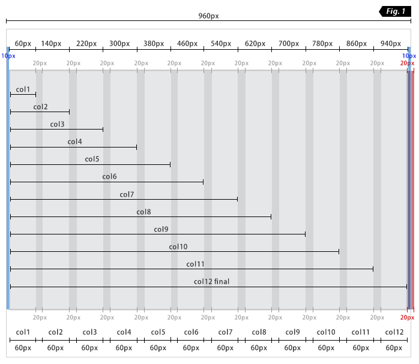
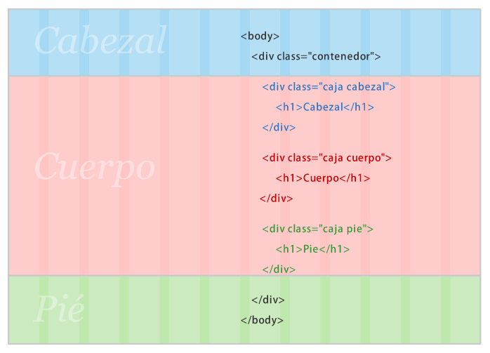
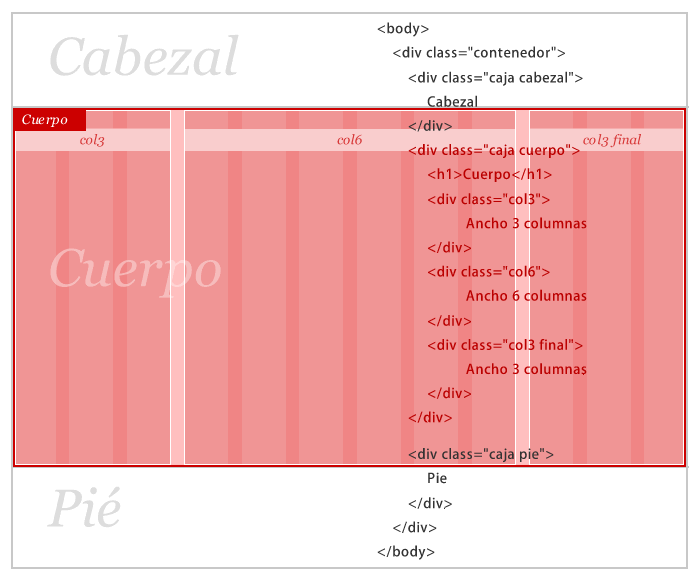

Manual Sîmple
~ Grilla CSS ~
Hojas de estilo de Sîmple
-
estilos.css: Es la que invoca al resto de las hojas de estilo usando la regla @import.
-
grilla.css: Define todos los elementos que configuran la estructura de Sîmple: contenedor, caja, columnas. Si quieres definir tu propio ancho de contenedor o columnas, cantidad de columnas, separación entre ellas, etc.... ésta es la hoja que debes modificar.
-
reset.css: Basado en el reset css de Blueprint, con algunas modificaciones personales.
-
visual.css: En ésta hoja de estilo es la que concentra todo lo relacionado con la parte estética: comportamientos, colores, tamaños, tipografías, etc. Cuando necesitemos vestir gráficamente la estructura, ésta es la hoja de estilo que debemos usar.
Conceptos clave
-
contenedor: ID. Es el elemento que define el ancho del sitio y contiene todos los otros elementos de Sîmple. Está predefinido a 960px de ancho lo que permite subdividirlo en 4, 8, 12, 16 columnas y tiene un padding de 10px a la izquierda y a la derecha.
-
caja: Clase. Es el contenedor universal de Sîmple y se aplica en un div. Tiene un ancho relativo y sirve para agrupar o encerrar columnas o cualquier otro elemento o grupo de elementos.
-
columnas: Clase. El ancho de las secciones se mide en columnas. Se escribe "colX" y van desde "col1 a "col12" y siempre van dentro de un div con el class "caja".
-
final: Clase. Cuando tenemos un grupo de columnas (colX) dentro de un div caja, la última columna debe sumar la clase "final" a la clase "colX" para eliminar el margen derecho sobrante.
Ventajas de usar Sîmple
-
Economía de código: No existen divs, contenedores o algún otro elemento html vacíos que se usen sólo para separar secciones y/o ayudar a estructurar la grilla a modo de "clear".
-
Velocidad: Menos código, más velocidad. Al estar semánticamente bien construído facilita la indexación de buscadores, la mantención o modificaciones y facilita el trabajo de otros sobre nuestro código.
-
Rápido punto de partida: Partir desde cero cada proyecto simplemente no es práctico. Las grillas o estructuras son parte integral del diseño, de la arquitectura, del arte y de muchas otras disciplinas. Tiene que ver con el equilibrio y la percepción y con el sano principio de automatizar los procesos que son repetitivos.
Referentes e inspiradores
Existen varisos sistemas de Grillas o Frameworks CSS que me sirvieron de enseñanza e inspiración para hacer mi propio sistema de acuerdo a mis necesidades, forma de trabajo y visión del diseño. Gracias a: 960 Grid System | Blueprint | Origo | Yaml | YUI Yahoo Grid CSS
Información sobre Grillas CSS
- » Importancia del diseño con grilla
- » ¿Cuando usar un framework CSS?
- » Los mejores frameworks CSS (y porqué no los uso)
- » 12 frameworks CSS que deberías conocer
- » A CSS Framework
- » BluePrint, un framework CSS
- » Frameworks Round-Up: When To Use, How To Choose?
- » www.designbygrid.com
- » YUI y otros Frameworks CSS
- » YAML - Un excelente framework CSS y uno de los más completos
Principio
"Una Grilla CSS debe ser fácil de entender, usar y modificar, económica en el uso del código y flexible para adaptarse a la mayor cantidad de necesidades de diagramación"
Sîmple se basa en columnas y no en la imitar de la estructura de las tablas, basada en filas y columnas. Básicamente se trata de eliminar el concepto de fila -que es el que contiene las columnas- y reemplazarlo por el elemento "caja" y darle a éste elemento propiedades más universales ya que "caja" será el único elemento contenedor, para grupos de columnas, grupos de otros elementos html o de otros lenguajes de programación. Y sí, aunque no sea una actitud "globalizada", ésta Grilla CSS privilegia el idioma español.
¿Cómo funciona Sîmple?
"Basado en 3 elementos clave: contenedor, caja y columa. El elemento "contenedor" (id) encierra todo y define el ancho del sitio, "caja" (clase) es el contenedor universal para definir las áreas o secciones de un sitio; y el ancho y ubicación de estas mismas se mide y determina en columnas llamadas "colX", desde "col1" a "col12"."
1024px es el ancho más usado actualmente en Internet. 960px es el ancho más versatil para las grillas ya que permite columnas con un ancho de 40 ó 60px cada una y, dependiendo de eso, el elemento "contenedor" puede ser dividido en 4, 8, 12, 16 (sí, múltiplos de 4) columnas.
Sîmple VIENE CON LA SIGUIENTE CONFIGURACIÓN BÁSICA : La versión base de Sîmple está formado por un elemento "contenedor" con un padding left y padding right de 10px (Fig. 1: marcado en azul), 12 columnas de 60px cada una con una separación de 20px entre columnas gracias a un margin-left de 20px. Todas las columnas flotan a la izquierda posicionándose una junto a otra gracias a la propiedad float: left. Es importante considerar que el ancho total es la suma del ancho de las columnas más la separación entre ellas.
Todas las columnas tienen un margin-left de 20px pero en el caso de la última columna éste margin-left de 20px no es necesario (Fig. 1: marcado en rojo). La solución es agregar una clase especial a la última columna, llamada "final" que lleva el margin-left a 0, sumada a la clase que define el ancho de la columna.
¿Sîmple PERMITE MODIFICAR EL ANCHO BASE, LA CANTIDAD DE COLUMNAS, ANCHO Y SEPARACIÓN ENTRE ELLAS?. Sí, es posible modificar todo esto. Sólo hay que mantener coherencia con el espíritu de Sîmple y hacer ciertas matemáticas. La idea es que el ancho base sea divisible por la cantidad de columnas que se deseen y dé como resultado un un número entero (ojalá par); se debe considerar además la separación entre columnas como parte del ancho base. Esto se define en el archivo grilla.css
Ejemplo de aplicación
Paso 1
a/La clase "contenedor" es la que define el ancho del sitio y contiene todos los otros elementos de la grilla.
b/No hay trabajo de columnas en esta etapa. Primero creamos los contenedores básicos (divs) que corresponden a la división de un sitio estándar (cabeza, cuerpo y pié) y se les asigna la clase "caja", así la estructura se configurará de acuerdo a la imagen de arriba.
c/ Las clases "cabezal", "cuerpo" y "pie" no son parte de Sîmple, se aplican sólo para efectos del ejemplo en el div correspondiente, que ya tiene la clase caja, gracias al principio de Suma de clases y permiten aplicar estilos en forma específica.
Paso 2
a/El div "caja cuerpo" se subdividirá en 3 secciones: 1 sección central principal (la más ancha) y 2 secciones laterales (angostas).
b/La sección central tendrá un ancho de 6 columnas (col6) y cada sección lateral tendrán un ancho de 3 columnas (3col):
3col + 6col + 3col = 12 columnas
c/IMPORTANTE: Para evitar el margen derecho de 20 pixeles en la última sección (3col de la derecha) debemos sumar la clase "final" a "col3". Si no lo hacemos, la última sección siempre quedará debajo de las otras 2 secciones.
Sîmple
~ Grilla CSS ~
 Simple - Grilla CSS creada por Rodrigo García Rejas está registrada bajo liencia Creative Commons Atribución-No Comercial-Licenciar Igual 2.0 Chile License. Permisos más allá del alcance de esta licencia pueden estar disponibles en http://creativecommons.org/licenses/by-nc-sa/2.0/cl/.
Simple - Grilla CSS creada por Rodrigo García Rejas está registrada bajo liencia Creative Commons Atribución-No Comercial-Licenciar Igual 2.0 Chile License. Permisos más allá del alcance de esta licencia pueden estar disponibles en http://creativecommons.org/licenses/by-nc-sa/2.0/cl/.